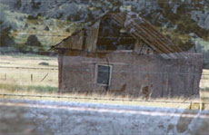

|
FREE LAND
Minda Martin | USA 2009 | 62 min.
Material: HD
Format: BlueRay
Original language: English
Camera: Minda Martin
Editing: Minda Martin
Sound: Theron Patterson
Production: Minda Martin
Print/Sales: Minda Martin
Best Documentary, United States Super 8 Film & Digital Video Festival, New Jersey 2010
www.mindamartin.org
German Premiere
FREE LAND is about my quest to understand the roots of my family’s poverty and homelessness revealing a national history of displacement and loss. The film begins by looking back in American history through my mother's paternal American Indian lineage rooted in Georgia and Tennessee, investigating how they became homeless as a result of federal relocation programs. In order to convey the trauma of having one's ancestral land forcibly taken away, I employed a mix of historical documentation (census rolls, letters, interviews with the Dawes Commission) and added creative writing to develop the characters — who are both American Indian women and directly related to me through my mother. My ancestor's stories are interwoven throughout the film with historical documents, footage of my father I had collected over 15 years working various low payed jobs, and discussion of the many moves and jobs that eventually led us to homelessness. — Minda Martin
Minda Martin, born and raised in Tucson, Arizon., She received her Bachelors of Arts degree from University of Arizona in creative writing, classics, and media arts. She then received her Masters of Fine Arts degree from California Institute of the Arts in film/video production. She is currently an Assistant Professor in the department of communication at California State University, San Marcos where she teaches production, media theory and culture related courses.
Films: 2009 Free Land | 2006 Monsoon St., 77 | 2003 Love, Minda | 2002 Do You Know ... | 2000 a.k.a. Kate | 1998 A Little Ballad | 1996 Mother's Heritage
back
|